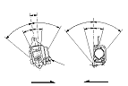
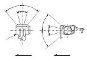
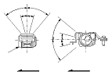

|
Out of Vehicle
For front seat belt retractor with seat belt tensioner, review the SRS component locations for the appropriate model:
Also review the precautions and procedures
before doing repairs or service.
|
|
Retractor
|
Front

Rear

Rear center
 |